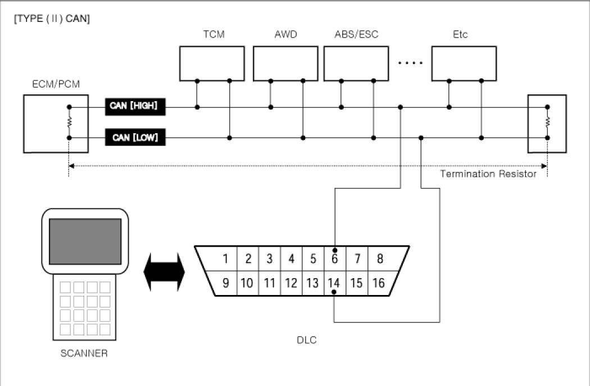
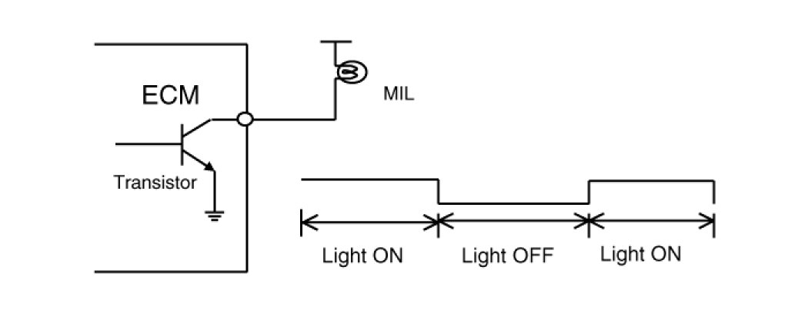

Computers and Control Systems: Description and Operation
OBD-II review
1. Overview
The California Air Resources Board (CARB) began regulation of On Board Diagnostics (OBD) for vehicles sold in California beginning with the 1988 model year. The first phase, OBD-I, required monitoring of the fuel metering system, Exhaust Gas Recirculation (EGR) system and additional emission related components. The Malfunction Indicator Lamp (MIL) was required to light and alert the driver of the fault and the need for repair of the emission control system. Associated with the MIL was a fault code or Diagnostic Trouble Code (DTC) identifying the specific area of the fault.
The OBD system was proposed by CARB to improve air quality by identifying vehicle exceeding emission standards. Passage of the Federal Clean Air Act Amendments in 1990 has also prompted the Environmental Protection Agency (EPA) to develop On Board Diagnostic requirements. CARB OBD-II regulations were followed until 1999 when the federal regulations were used.
The OBD-II system meets government regulations by monitoring the emission control system. When a system or component exceeds emission threshold or a component operates outside tolerance, a DTC will be stored and the MIL illuminated.
The diagnostic executive is a computer program in the Engine Control Module (ECM) or Powertrain Control Module (PCM) that coordinates the OBD-II self-monitoring system. This program controls all the monitors and interactions, DTC and MIL operation, freeze frame data and scan tool interface.
Freeze frame data describes stored engine conditions, such as state of the engine, state of fuel control, spark, RPM, load and warm status at the point the first fault is detected. Previously stored conditions will be replaced only if a fuel or misfire fault is detected. This data is accessible with the scan tool to assist in repairing the vehicle.
The center of the OBD-II system is a microprocessor called the Engine Control Module (ECM) or Powertrain Control Module(PCM).
The ECM or PCM receives input from sensors and other electronic components (switches, relays, and others) based on information received and programmed into its memory (keep alive random access memory, and others), the ECM or PCM generates output signals to control various relays, solenoids and actuators.
2. Configuration of hardware and related terms
1) GST (Generic scan tool)

2) MIL (Malfunction indication lamp) - MIL activity by transistor

The Malfunction Indicator Lamp (MIL) is connected between ECM or PCM-terminal Malfunction Indicator Lamp and battery supply (open collector amplifier).
In most cars, the MIL will be installed in the instrument panel. The lamp amplifier can not be damaged by a short circuit.
Lamps with a power dissipation much greater than total dissipation of the MIL and lamp in the tester may cause a fault indication.
- At ignition ON and engine revolution (RPM)< MIN. RPM, the MIL is switched ON for an optical check by the driver.
3) MIL illumination
When the ECM or PCM detects a malfunction related emission during the first driving cycle, the DTC and engine data are stored in the freeze frame memory. The MIL is illuminated only when the ECM or PCM detects the same malfunction related to the DTC in two consecutive driving cycles.
4) MIL elimination
Misfire and Fuel System Malfunctions:
For misfire or fuel system malfunctions, the MIL may be eliminated if the same fault does not reoccur during monitoring in three subsequent sequential driving cycles in which conditions are similar to those under which the malfunction was first detected.
All Other Malfunctions:
For all other faults, the MIL may be extinguished after three subsequent sequential driving cycles during which the monitoring system responsible for illuminating the MIL functions without detecting the malfunction and if no other malfunction has been identified that would independently illuminate the MIL according to the requirements outlined above.
5) Erasing a fault code
The diagnostic system may erase a fault code if the same fault is not re-registered in at least 40 engine warm-up cycles, and the MIL is not illuminated for that fault code.
6) Communication Line (CAN)
- Bus Topology : Line (bus) structure
- Wiring : Twisted pair wire
- Off Board DLC Cable Length : Max. 5m
- Data Transfer Rate
- Diagnostic : 500 kbps
- Service Mode (Upgrade, Writing VIN) : 500 or 1Mbps)
7) Driving cycle
A driving cycle consists of engine start up, and engine shut off.
8) Warm-up cycle
A warm-up cycle means sufficient vehicle operation such that the engine coolant temperature has risen by at least 40 degrees Fahrenheit from engine starting and reaches a minimum temperature of at least 160 degrees Fahrenheit.
9) Trip cycle
A trip means vehicle operation (following an engine-off period) of duration and driving mode such that all components and systems are monitored at least once by the diagnostic system except catalyst efficiency or evaporative system monitoring when a steady-speed check is used, subject to the limitation that the manufacturer-defined trip monitoring conditions shall all be encountered at least once during the first engine start portion of the applicable FTP cycle.
10) DTC format
- Diagnostic Trouble Code (SAE J2012)
- DTCs used in OBD-II vehicles will begin with a letter and are followed by four numbers.
The letter of the beginning of the DTC identifies the function of the monitored device that has failed. A "P" indicates a powertrain device, "C" indicates a chassis device. "B" is for body device and "U" indicates a network or data link code. The first number indicates if the code is generic (common to all manufacturers) or if it is manufacturer specific. A "0" & "2" indicates generic, "1" indicates manufacturer-specific. The second number indicates the system that is affected with a number between 1 and 7.
The following is a list showing what numbers are assigned to each system.
1. Fuel and air metering
2. Fuel and air metering(injector circuit malfunction only)
3. Ignition system or misfire
4. Auxiliary emission controls
5. Vehicle speed controls and idle control system
6. Computer output circuits
7. Transmission
The last two numbers of the DTC indicates the component or section of the system where the fault is located.
11) Freeze frame data
When a freeze frame event is triggered by an emission related DTC, the ECM or PCM stores various vehicle information as it existed the moment the fault occurred. The DTC number along with the engine data can be useful in aiding a technician in locating the cause of the fault. Once the data from the 1st driving cycle DTC occurrence is stored in the freeze frame memory, it will remain there even when the fault occurs again (2nd driving cycle) and the MIL is illuminated.
- Freeze Frame List
1) Calculated Load Value
2) Engine RPM
3) Fuel Trim
4) Fuel Pressure (if available)
5) Vehicle Speed (if available)
6) Coolant Temperature
7) Intake Manifold Pressure (if available)
8) Closed-or Open-loop operation
9) Fault code
3. OBD-II system readiness tests
1) Catalyst monitoring
The catalyst efficiency monitor is a self-test strategy within the ECM or PCM that uses the downstream Heated Oxygen Sensor (HO2S) to determine when a catalyst has fallen below the minimum level of effectiveness in its ability to control exhaust emission.
2) Misfire monitoring
Misfire is defined as the lack of proper combustion in the cylinder due to the absence of spark, poor fuel metering, or poor compression. Any combustion that does not occur within the cylinder at the proper time is also a misfire. The misfire detection monitor detects fuel, ignition or mechanically induced misfires. The intent is to protect the catalyst from permanent damage and to alert the customer of an emission failure or an inspection maintenance failure by illuminating the MIL. When a misfire is detected, special software called freeze frame data is enabled. The freeze frame data captures the operational state of the vehicle when a fault is detected from misfire detection monitor strategy.
3) Fuel system monitoring
The fuel system monitor is a self-test strategy within the ECM or PCM that monitors the adaptive fuel table The fuel control system uses the adaptive fuel table to compensate for normal variability of the fuel system components caused by wear or aging. During normal vehicle operation, if the fuel system appears biased lean or rich, the adaptive value table will shift the fuel delivery calculations to remove bias.
4) Engine cooling system monitoring
The cooling system monitoring is a self-test strategy within the ECM or PCM that monitors ECTS (Engine Coolant Temperature Sensor) and thermostat about circuit continuity, output range, rationality faults.
5) O2 sensor monitoring
OBD-II regulations require monitoring of the upstream Heated O2 Sensor (H2OS) to detect if the deterioration of the sensor has exceeded thresholds. An additional HO2S is located downstream of the Warm-Up Three Way Catalytic Converter (WU-TWC) to determine the efficiency of the catalyst.
Although the downstream H2OS is similar to the type used for fuel control, it functions differently. The downstream HO2S is monitored to determine if a voltage is generated. That voltage is compared to a calibrated acceptable range.
6) Evaporative emission system monitoring
The EVAP. monitoring is a self-test strategy within the ECM or PCM that tests the integrity of the EVAP. system. The complete evaporative system detects a leak or leaks that cumulatively are greater than or equal to a leak caused by a 0.040 inch and 0.020 inch diameter orifice.
7) Air conditioning system monitoring
The A/C system monitoring is a self-test strategy within the ECM or PCM that monitors malfunction of all A/C system components at A/C ON.
8) Comprehensive components monitoring
The comprehensive components monitoring is a self-test strategy within the ECM or PCM that detects fault of any electronic powertrain components or system that provides input to the ECM or PCM and is not exclusively an input to any other OBD-II monitor.